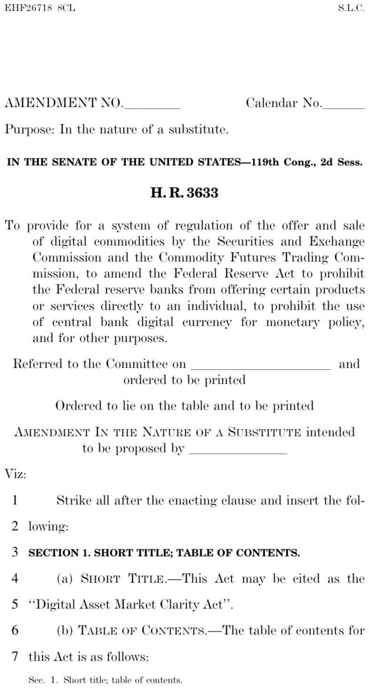
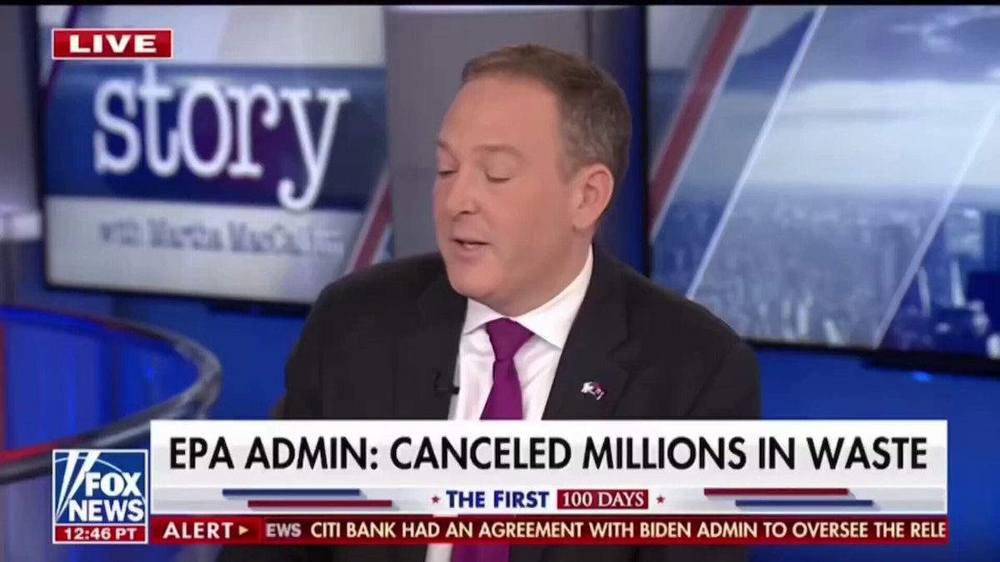
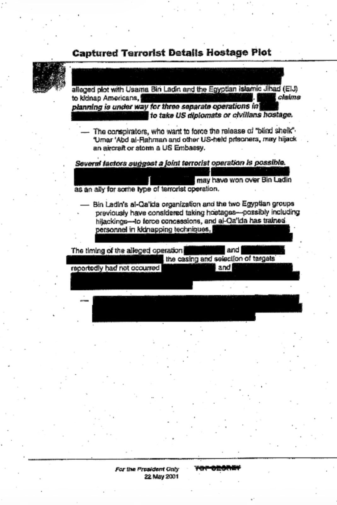
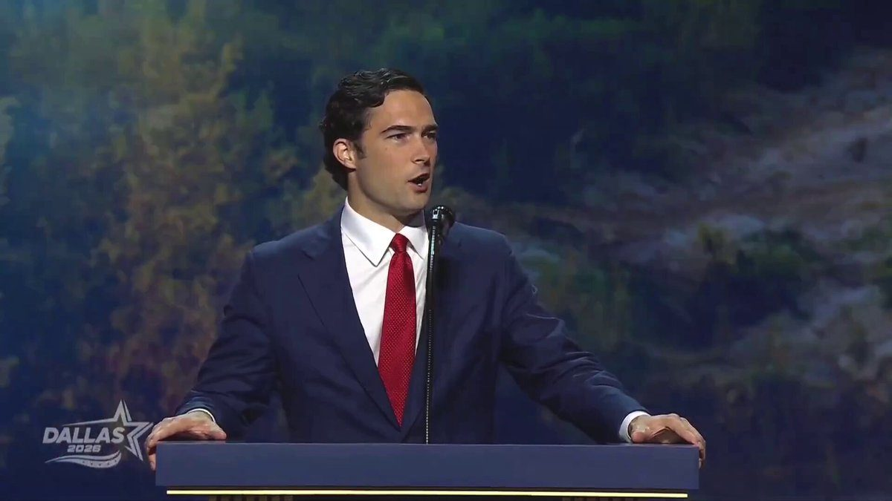
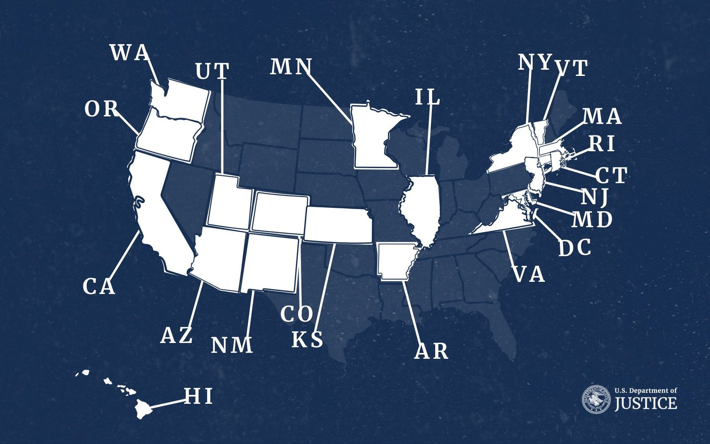
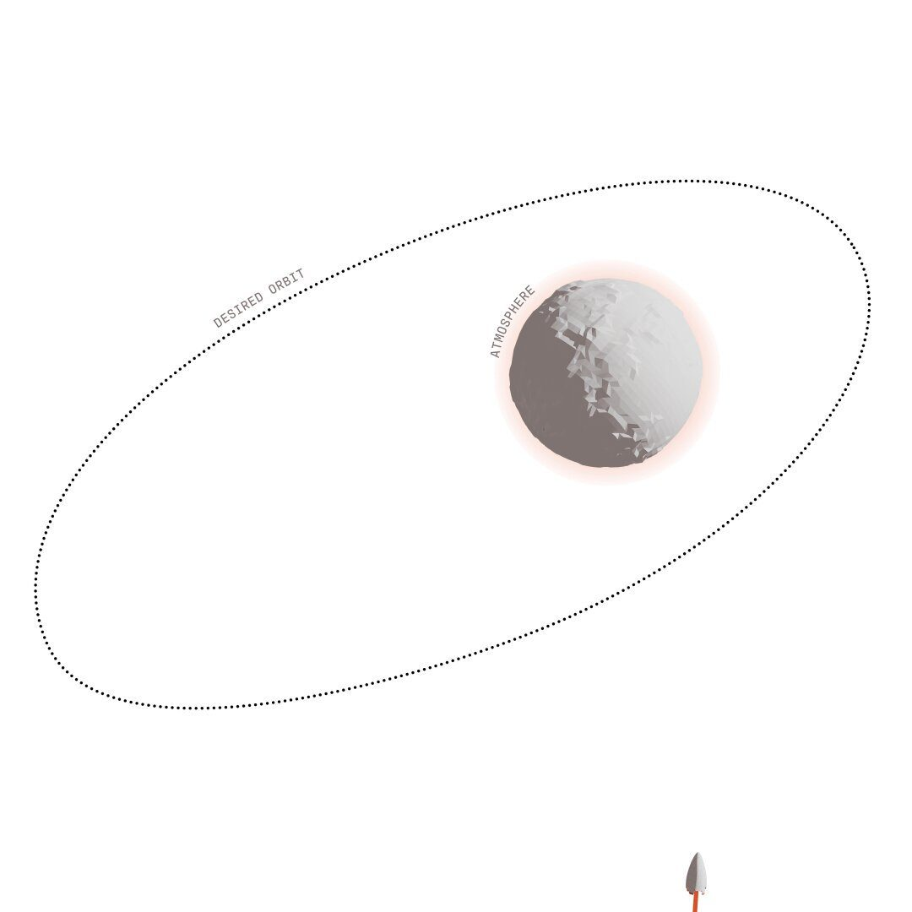

BREAKING: Houthi forces have captured the strategic island of Perim in the Bab el-Mandeb Strait and Yemeni government forces have withdrawn. This gives the Houthis significantly more control over one of the world’s most critical shipping chokepoints. The Bab el-Mandeb Strait handles ~12% of global seaborne oil flows and ranks as the world’s 4th-largest shipping chokepoint.
🚨NEW: Senate Republicans have released updated Clarity Act text reflecting changes negotiated over the August recess.
There appear to be no changes to the ethics section. BRCA and stablecoin yield sections also remain the same.
The changes here include:
📌Requiring non-decentralized DeFi protocols to register with the CFTC, which mirrors Section 10301 of the Banking Committee portion of the bill.
📌Limiting the DeFi provisions to spot or cash digital commodity transactions, which appears aimed at addressing concerns raised by tribes about blockchain-based prediction markets.
📌Clarifying the authority of credit unions to deal in crypto.

Every CFO I speak with is thinking about AI. The harder question isn’t whether to adopt it, it’s how to ensure confidence and clarity of AI within critical financial operations. That question is especially important in treasury, where governance, explainability, and human accountability aren’t optional. That’s why we’ve taken a different approach with GSmart, which we’re expanding today at Ripple Treasury.
Instead of building AI alongside treasury, we’re building intelligence into the way treasury already works: grounded in an organization’s policies, data, and workflows, with deterministic financial logic and people remaining in control of financial decisions. We describe this as Treasury-Native AI".
GSmart AI capabilities are already in production with our enterprise customers, and today’s expansion is another step toward what we believe the Office of the CFO needs next: technology that doesn’t just help teams understand their cash, but helps them act on it, with clarity.
More on today's news on treasury-native AI here:
Banks benefit from crypto.
We're partnering with @Moov to provide small and community banks the infrastructure for stablecoins.
That means acceptance, settlement, and real-time funding for more than 1000 of them, through the tech stacks they already use.
This is what regulated stablecoin infrastructure looks like.
LATEST: The UK House of Lords passes an amendment requiring the Treasury to publish a national digital asset strategy within 12 months covering crypto, stablecoins and tokenized securities, as the UK moves to catch up with MiCA and the U.S. CLARITY Act.
JUST IN: Canada's banking regulator OSFI just confirmed tokenized deposits are legally no different from traditional bank deposits, giving federally regulated banks a green light to build on blockchain without a new regulatory category.
Generative AI ⇨ Agentic AI.
A complete rebuilding of our 1970’s financial ecosystem.
Sandy Kaul on how blockchain could be the unlock with @scottmelker at the Franklin Templeton Media Garden at Out East @TheTieIO.
▶ Watch on X🇮🇳 JUST IN: India launches a blockchain pilot to tokenize its $620B corporate bond market, with settlements using the RBI’s wholesale digital rupee.
JUST IN: 🇷🇺🇮🇳 Russia and India working on mechanism to use digital currencies for bilateral trade payments - Sberbank CEO Herman Gref.
Every stablecoin issuer says it's regulated.
A money transmitter license, a state trust charter, and federal prudential supervision all qualify and carry different reserve rules, verification requirements, and outcomes if the issuer fails.
$RLUSD was built for the stricter reading of that word: a limited-purpose trust charter, segregated reserves, and monthly independent CPA attestation with a federal supervisory layer conditionally approved on top.
Unpacking what "regulated" actually means:
Fannie and Freddie also have internal credit scoring data. To have a safer and sounder market, and to increase transparency of the underwriting of our loans, we will be immediately including/attaching that Fannie and Freddie data inside MBS, CRT, and other securitized products.
Bank of England validates stablecoin clearing on Stellar: Nuvanté's prototype demonstrates fiat-backed digital money issuance, redemption, and settlement in RTGS RT2 Synchronisation Lab via @StellarOrg
🇮🇳 NEW: India's richest state is exploring tokenizing its own assets to fund new infrastructure.
JUST IN: Coinbase declares it has a “backup plan” if the CLARITY Act fails in Congress.
🔥 JUST IN: Right-wing President of Ecuador just bestowed one of his nation's HIGHEST state decorations on Marco Rubio — the National Order of Merit
GOAT.
ALL of Latin America knows Marco is going down in history! 🇺🇸🇪🇨
This award is given to either citizens or foreign nationals who have carried out extraordinary achievements and service
Second country of Rubio's trip — he's headed to Peru next!
President Trump made clear on his first day in office that the Biden Administration’s OECD global tax deal would have no force or effect in the United States.
The revised GloBE Information Return delivers on a key element of President Trump’s international tax agenda by putting the side-by-side framework into operation. It ensures that U.S.-headquartered companies remain subject to U.S. global minimum taxes, not overlapping foreign regimes, while significantly reducing unnecessary reporting and compliance burdens. By respecting U.S. tax sovereignty and lowering compliance costs for American businesses, these new rules mark another important step toward restoring certainty and stability to the international tax system.
⚡️🇷🇺 Putin: 'I Don't Understand Why They're Called The Big Seven'
The President points to the rapid development of #BRICS nations which have "huge, dynamic" markets driving growth, which have produced 40% of the world's GDP, while the so-called 'big seven' nations made only 29%
▶ Watch on XMet with President Keiko Fujimori in Lima to welcome Peru's entry into the Shield of the Americas and discuss security and investment cooperation for the shared economic prosperity of our countries.
JUST IN: 🇷🇺 Russian President Putin says the world's old leaders are being replaced by new engines of growth.
▶ Watch on XJUST IN: 🇷🇺 Russian President Putin says a new world order is forming within BRICS.
WOW 🚨 Head of the EPA Lee Zeldin says the Biden Admin sent $160 million dollars to a Canadian electric vehicles company. They pocketed the money, didn’t send the school busses promised and then declared bankruptcy
Textbook money laundering. People need to go to prison
“There was $160 million that went to a Canadian electric vehicle bus manufacturer. The Biden administration sent all of the money — They gave all the money up front. Well, guess what? They just declared bankruptcy.
— They still haven't provided $95 million worth of school buses to 55 school districts. It's the American taxpayer that gets screwed”
I looked into it and have verified as of today, not a single penny has been recovered from this scam. The people involved got to keep all the money

▶ Watch on XStephen Miller:
“What we’ve found since President Trump took office is that Democrats have set up a system to funnel hundreds of billions — ultimately trillions — of dollars to migrants in our country, effectively with the sole intent of overthrowing the Constitutional Republic of the United States.”
Not charity. Not compassion. A pipeline. #StephenMiller #AmericaFirst #BorderCrisis #MAGA #Immigration #News
'Right-hand-man' son of genocidal Somali dictator who killed 200,000 found living in Ohio, linked to $1.8M Medicare firm https://t.co/kA6cc1ThHu
Trust is being restored. Results are being delivered. Over $235 BILLION in fraud identified.
PROMISES MADE, PROMISES KEPT. 🇺🇸
▶ Watch on X#BREAKING: Florida launches anti-fraud task force to chase stolen tax dollars.
#BREAKING: 3 convicted in an $11M Virginia Medicaid fraud scheme.
BREAKING: George W. Bush was personally warned in May of 2001–via a top secret memorandum marked “For the President Only”—that Osama Bin Laden was planning spectacular attacks against the U.S. using hijacked aircraft.
The May 22, 2001 memo, prepared exclusively for President George W. Bush, was entitled “Captured Terrorist Details Hostage Plot” and noted that “planning is under way for three separate operations[.]”

To commemorate the 25th anniversary of 9/11, CIA released 71 President's Daily Briefs to give Americans a glimpse into our most sensitive intelligence from the years before and day after one of our Nation's darkest moments.
https://www.cia.gov/stories/story/cia-releases-presidents-daily-briefs-in-commemoration-of-the-25th-anniversary-of-9-11/
JUST IN: Former President George W. Bush shares paintings he created for the 25th anniversary of 9/11.
.@realBrandonGill: "It's only appropriate that we kick this off with a land acknowledgment. I'd like to acknowledge that we stand here today in the great state of Texas and the United States of America-- the ancestral homeland of great American patriots, pioneers and explorers... who bled and died to build the greatest civilization known to man."

▶ Watch on XLiberty has prevailed here because of the culture and character of the people who declared it, defended it, and preserved it.
This is our history. This is America’s destiny: to be the greatest, most extraordinary country ever to grace the Earth. 🇺🇸
▶ Watch on XToday, the United States Mint announced a special-issue 2026 Semiquincentennial Enduring Liberty Half Dollar to mark the 25th anniversary of September 11. The Half Dollar features a unique privy mark: the date of the attack encircled by the phrase “NEVER FORGET.”
JUST IN: Massachusetts mayor orders Flock cameras to be covered with black plastic bags, saying she has “no confidence” in how the company is handling data.
Fact Sheet: President Donald J. Trump Announces the Working Families Obamacare Refunds
Trump Dividend: America Is Winning — and Americans Should Win With It
🚨Today, we filed the final four lawsuits against three states and DC who seek to undermine federal law by placing illegal aliens over citizens in clear defiance of Congress’s commands.
The Department has now challenged every state with laws that provide in-state tuition to illegal aliens, bringing the number of lawsuits to 25. The map below shows the remaining states who are facing lawsuits for providing in-state tuition to illegal aliens.
“No more placing illegal aliens over American citizens on this Department of Justice’s watch,” said @ASGWoodward. “We have now sued every state across our Nation that has a state law or regulation granting illegal aliens in-state tuition. We look forward to favorable court rulings and will continue to deliver on President Trump’s promise: illegal aliens will not receive benefits denied to American citizens.”
🔗:

Trump pushes new bill making it illegal for future presidents 'to open the border again' https://t.co/NJd47cVxJZ
JUST IN: 🇺🇸 US to scrap 60-day grace period for H-1B and L-1 visa holders, forcing many foreign workers to leave immediately after losing their jobs.
Yemen Hits Saudi Arabia's East-West Oil Pipeline for First Time
This comes as BRENT CRUDE Crosses $109
Satellite data detected SIX simultaneous fire hotspots along the Abqaiq-Yanbu route at around 17:56 UTC.
The pipeline is a critical bypass allowing Saudi crude to reach the Red Sea without passing through the Strait of Hormuz.
⭕️ BIG.
Yemen's Ansarallah possibly struck the East-West pipeline at several points, this morning, and later this evening.
NASA FIRMS detected fire less than an hour ago, and satelite image showed a significant plume of black smoke over the south of Medina.
▶ Watch on XInversion has been selected by @NASA to advance aerocapture technology for interplanetary missions.
Aerocapture is a simple but powerful idea: use a planet’s atmosphere to slow down instead of fuel.
Spacecraft arriving at another planet are traveling at tremendous speeds and traditionally must carry significant propellant to slow down and enter orbit.
Aerocapture instead uses aerodynamic forces during a single controlled pass through the atmosphere to shed velocity and achieve orbital capture. Less fuel means mass savings that can enable greater flexibility in launch vehicle selection, increased science payload, and significantly shorter trip times.
Under the contract, Inversion will study how Arc could support the demonstration through mission design, aerodynamics, trajectory analysis, and vehicle definition.
This award represents a new frontier for Arc and highlights the growing range of missions enabled by advanced reentry.

▶ Watch on XJUST IN: Analysis reveals Waymo’s self-driving vehicles were roughly 900% safer than human drivers across 25.3 million autonomous miles.
JUST IN: OpenAI launches ChatGPT for Financial Services to research markets and build financial models.
BREAKING: Nvidia CEO says AI is the new "electricity" and the scale is unlike any tech in history
The Justice Department and Department of Education found that UC Berkeley Law deliberately discriminated against White and Asian applicants in violation of federal civil rights law.
In 2025, admitted Black students had a median LSAT score of 167, compared to 172 for both White and Asian students. Across 2024 and 2025, half of admitted Black applicants scored below 95% of admitted White applicants, while 37% scored below 99% of White admits.
Despite that gap, Black applicants in 2025 had 5.8 times higher odds of admission than comparable White applicants.
Follow: @AFpost
UC Berkeley Law intentionally discriminated against white, Asian applicants: Feds https://t.co/9zZPb8lnh3
JUST IN: NASA and IBM have open-sourced one of the first AI foundation models built specifically to understand the Moon as NASA prepares for a permanent human presence on the lunar surface.
The Lunar Foundation Model combines more than 30 aligned data layers from 9 instruments across 4 missions, bringing decades of surface and subsurface observations into one AI system.
It can search for potential lunar ice, map craters, and analyze volcanic terrain. In testing, it reduced errors in identifying high-potential lunar ice regions by up to 22% and improved crater detection by nearly 19% over a leading comparison model.
This matters for NASA's Moon Base plans we've covered here on OST, as lunar ice would be essential for water, oxygen, and rocket propellant, while detailed terrain mapping can help determine where to land and build infrastructure for the Lunar base.
NASA and IBM have made both the model and dataset open source, allowing researchers worldwide to build on them as humanity moves from simply visiting the Moon to actually living and working there.
NEW: The European Central Bank hikes rates by 25bps for the second time this year as rising oil prices drive inflation higher, with markets now pricing a 90% chance of a third hike before year-end.
The United States of America will withdraw over 100,000 U.S. troops from Europe and halt its annual defense spending of trillions of dollars. - per Secretary of State Rubio
.@AGToddBlanche: "Illegal border crossings are at their lowest level since the 1970s. Fentanyl trafficking at the southern border fell 56%. Overdose deaths fell 21%."
JUST IN: More than 30 major Seattle companies, including Microsoft, Costco, & Starbucks, sign letter demanding action from Mayor Katie Wilson over the city’s deteriorating public safety.
🚨 This morning, the FBI and our partners arrested a subject near Los Angeles for allegedly paying homeless individuals on Skid Row in downtown Los Angeles to sign petitions in support of ballot initiatives—all using stolen identities of registered voters.
Two additional petition circulators have also been charged in the investigation. All three subjects are charged with conspiracy to commit identity fraud in furtherance of a state felony, among other charges.
Securing American elections from criminal interference is of the utmost importance to this FBI.
If you mess with our elections, this FBI will find you.
Great work by @FBILosAngeles and our partners. -DKP🇺🇸
Illegal Alien Gets Arrested After Voting In 2024 Presidential Election
.@USComptroller: In support of @POTUS’ & @SecScottBessent’s vision of parallel prosperity & a strong community banking system that thrives & drives economic growth, OCC is reducing burden for these banks, so they can focus more on serving their customers. https://www.occ.gov/news-issuances/news-releases/2026/nr-occ-2026-76.html
HOLY F-K. NYC IS GONE. Islam has conquered in less than a year of Mamdani.
New York City’s tax on luxury second homes is giving city lawmakers new leverage to pursue an overhaul of its property tax system that elected officials acknowledge is outdated, but are loath to take up.
JUST IN: 🇺🇸 DHS Secretary confirms Rep. Ilhan Omar married her brother, says consequences are coming.
NOW: Anti-Mamdani protesters gathered on Canal Street in Manhattan for "March for America"
BREAKING: Canada and Ukraine are committing to a 100-year partnership.
@OgAn0n661 The best explanation of 9/11 I’ve ever heard.
JUST IN: Pentagon warns Congress that $1.5 trillion in funding is needed to rapidly replenish critical U.S. munitions after heavy use in the Iran operation, including Patriot, Tomahawk, & THAAD weapons.
BREAKING: Rocket Lab is formally challenging NASA’s Mars telecom award, seeking a review to “ensure fair competition and protect public investment.”